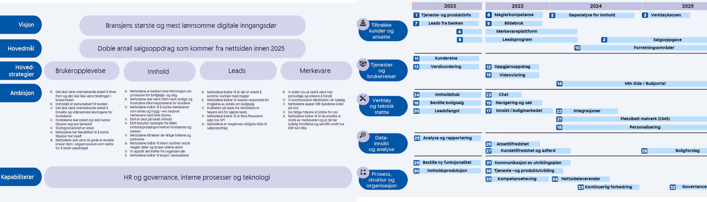
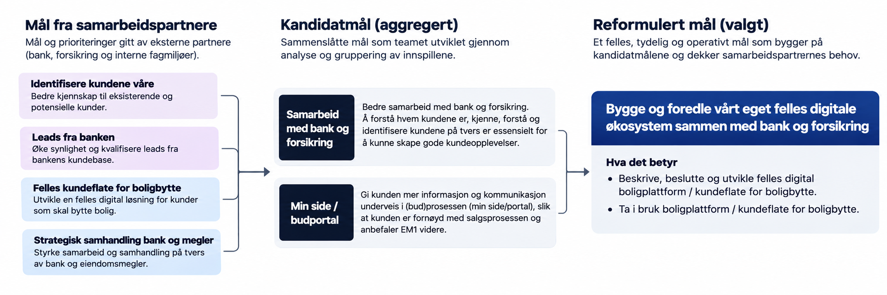
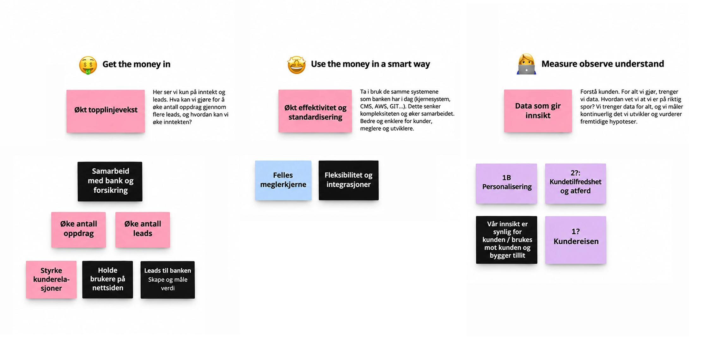

EiendomsMegler 1 · Product strategy
Creating a shared direction for product teams
At EiendomsMegler 1, I worked with product teams in Oslo and Trondheim on product direction and prioritisation.
The teams had plenty of work, but no shared view of the product objective or why one initiative should matter more than another.
In that gap, feature requests started to become goals. A backlog grew from requests coming from bank and broker representatives, without a consistent way to judge whether those ideas solved a real problem or created enough value.
The problem was not a lack of activity.
It was a lack of direction.

When features start replacing strategy
EiendomsMegler 1 had accumulated goals from several parts of the organisation.
Some overlapped. Some described solutions. Others sat outside the product teams’ mandate.
Without a shared product direction, it was difficult for the teams to answer basic questions:
What are we trying to achieve? Why does this matter? What should we prioritise? What should we not do?
That uncertainty also affected the relationship between the product teams and the steering group. New ideas could enter the backlog before anyone had established whether they supported the same objective.

Making the direction explicit
We started by mapping the existing goals and the conditions around them.
What was within the teams’ mandate? What could they influence? What sat outside their control? Which goals depended on each other?
Then we challenged the goals themselves.
Some were kept. Some were merged or reformulated. Others were removed because they duplicated another objective, prescribed a feature too early, or did not help the teams make a meaningful product decision.
The aim was not to produce a shorter list.
It was to make the direction clear enough that teams could use it.
Creating a North Star for product decisions
The work gradually created a shared reference point for the teams.
Instead of treating every request as a possible addition to the backlog, we could ask whether it moved the product in the direction we had agreed.
We introduced simple questions for testing the quality of a goal:
Is it clear what outcome we want? Is it solution-neutral? Can the team influence it? Does it help us choose between competing opportunities?
This gave the teams a North Star for evaluating new ideas without prescribing the solution in advance.

Making it easier to decide what not to do
The change became visible when new requests appeared.
Instead of reopening the strategy discussion every time, the teams could assess an idea against the same shared direction.
Some ideas moved forward quickly.
Others did not.
The important difference was that both decisions were easier to explain.
The teams understood what they were trying to achieve, and the steering group could see why a feature did or did not belong in the product direction.
Autonomy built on shared understanding
The outcome was more than clearer prioritisation.
The product teams gained more autonomy because their decisions were easier to understand and defend.
The steering group did not need every request to become a feature. Clear reasoning created confidence that the teams were making deliberate choices rather than ignoring stakeholder needs.
That changed the relationship between governance and product.
Trust increased because the teams could explain what they were doing, what they were not doing, and why.
With clearer boundaries and less pressure to satisfy every request, the teams also had more room to challenge assumptions and make decisions without treating disagreement as failure.
Clear direction made autonomy possible
The most useful result was not the final set of goals.
It was the shared understanding behind them.
Once the teams and steering group had a common North Star, prioritisation became faster, feature requests became easier to challenge, and the teams had more confidence to make decisions themselves.
The strategy created clarity about both what to do and what not to do.
That clarity made autonomy possible.